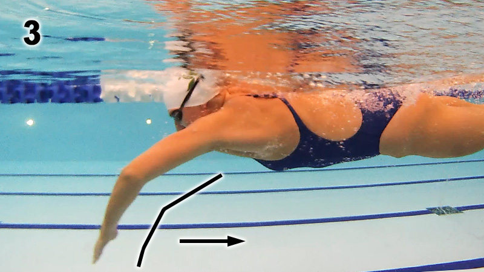

FREESTYLE SWIMMING
×
Mr. Smooth
Front QUADRANT Catch-Up:
https://www.thoughtco.com/catch-up-swimming-3168752
CATCH-UP DRILL
Assume prone position in water and
extend arms forward; arms should be just a bit under
surface of water, pointing at destination.
One arm then performs a regular freestyle pull,
starting from that extension, through the catch and finish, then it recovers to an
extension, pointing at your destination, back to where it started.
Other arm is still,
just keep it pointing forward. Should feel like you body is very long
or extended, and you may feel pulses or instants of power as you pull, then pulses of
gliding as one arm recovers but the other arm has not yet started pulling.
The swimming arm
catches up
to the arm that is still extended, pointing forward.
< NB!
https://www.youtube.com/watch?v=jx1Dltg49Xo
http://www.feelforthewater.com/2014/09/clearing-up-confusion-about-front.html
High Elbow Catch Is Important!
< need to keep shouder up by ear to keep elbow high
Stop over-reaching. At a point reaching too far in front of you ends up actually
costing you. If you are reaching and gliding at the beginning of the stroke it
becomes very difficult not to drop the wrist and elbow.
Do not sacrifice a powerful catch for a longer stroke. When we over-glide we
naturally
end up dropping our elbow.
https://www.yourswimlog.com/high-elbow-catch/
Leg Kick
http://www.swimsmooth.com/kick.html
Not looking to get much or any propulsion from leg kick.
Want: lift legs up; low drag; low effort.
1.
Kick from the hip
2.
Plantar flexed feet (Pointing Your Toes)
Presents a much lower profile to the water. Not pointing your toes will push water
forwards when you kick, slowing you dramatically.
4. Timing
When the hand enters the water at the front of the stroke, the opposite
leg should kick. < ??(see below)
In 2 beat kick this is the only kick, in 4 and 6 beats there are other kicks in between
Scissor kicks -
cut them out and you'll go a lot faster.
A scissor kick is a very large opening of the legs, normally when a swimmer goes to
take a breath. They hurt you because of the enormous amount of drag they generate
It's a bit like opening up a parachute behind you.
Catch & Pull
http://www.swimsmooth.com/catch.html
Lock on & press the water
back behind you. Contrast this to what most swimmers
do - pressing the water down at the front of the stroke rather than back.
Palm looks at bottom of pool, but with
finger tips angled slightly down.
This should be
flexed from the wrist (not from the knuckles). Need to keep
palm flat and open,
fingers closed loosely together.
At full reach and without dropping your elbow,
feel like you are tipping your
finger-tips over the front of a barrel (again flexing at the wrist), which
will
start the catch.
At the same time start
bending the elbow and pressing back on the water with
the forearm in a near-vertical position.
This is what keeping your
elbows high on the catch is all about.
Bend Like Becky
http://www.swimsmooth.com/improve/intermediate/bend-it-like-becky
Catch And Pull
Pull-Through Technique
As press water backwards, elbow is bent to 110 deg > perfect leverage to press water
backwards, propelling forwards. Aim for an elbow bend of between 100 and 120 deg.
Many swimmers pull through with a very
straight arm which places a lot of load on the
shoulder and
produces much less propulsion.

PULL:
high-elbow catch position
Also
hand is directly below shoulder as pull through. If you press wide of this or
cross the centre line then you will snake down the pool and waste a lot of energy.
SUBTLY tip wrist right at front of stroke, just before starting the catch - helps initiate a
high-elbow catch position. NB because it helps bring the fingers and hand downwards to
initiate "the catch" (the point at which you start to gain purchase on the water at the
very front of the stroke). Initiation from the wrist brings the hand and forearm downwards
into the classic high elbow catch position.
Can now press the water backwards, not
downwards, which is the essence of a great propulsive technique. It is possible to over-do
this action and point the fingertips too far downwards.
Do not rush the catch but engage with the water and progressively press it backward, helping
you generate more propulsion for less effort.
Kick Timing
https://www.usms.org/fitness-and-training/articles-and-videos/articles/kick-timing-101
Two-, Four, and Six-Beat Kicking Patterns
Compare it to walking. When you are walking, as your left leg swings forward your
right arm swings forward as counterbalance. 1 downward kick should
always be timed with the recovery of the opposite arm as it slices in to forward
extension.
Count the kick as it snaps down, not up, as you would if you were running and counting
foot strikes - the foot strike happens immediately after the leg swings forward, not when
it swings back on recovery.
Six-beat kick:
Think of this common kick pattern as being
similar to the timing of a waltz: Count "One-two-three; one-two-three" or
"Right-two-three; left-two-three" and so on. In short, you should complete six
kicks per stroke cycle or three kicks per single arm stroke. The first kick is down,
timed with the opposite recovery arm spearing to forward extension. So, in this pattern,
the right leg kicks down (one) and rotates the torso to the left skating edge, which is
followed by a downward kick on the left side (two). The third beat comes with the right
leg kicking down (three), then the left leg kicks down (one). Next, the torso rotates to
the right skating edge, which is followed by another downward right kick (two)
and finally
a downward left kick (three).
++++++++++++++++++++++++++++++++++++++++++++++++++++++++++++
The start of the
propulsive phase of the arm stroke always coincides with a downward
motion of the leg on the
same side.
http://www.enjoy-swimming.com/flutter-kick.html
In the
six-beat kick, each leg kicks three times per stroke cycle. Consider the
movements of the right arm and the right leg. The
first
downbeat of the leg occurs
during the forward extension of the same arm. The second downbeat of the leg occurs
during the upsweep of the arm. The third downbeat of the leg occurs during
the recovery of the arm. The left leg moves in opposition to the right leg.
In the
two-beat kick you kick once with each leg per stroke cycle.
The
downbeat of the
right leg occurs during the
propulsive phase of the
right arm
stroke (insweep and upsweep to be precise).
++++++++++++++++++++++++++++++++++++++++++++++++++++++++++++
Downward leg kick and the finish of the arm 'push' phase are timed together.
https://swimcoachingblog.com/2013/03/12/frontcrawl-timing-pt-1-arms-and-legs/
http://www.youtube.com/watch?v=VbelgVrdsSk
In the
two beat kick the
right leg kicks downwards as the right arm
finishes the push phase. In the two beat kick there is a distinctive pause between kicks;
(L)kick-pause-(R)kick-pause. . . and in the
six beat kick instead of the pause a swimmer
squeezes in two additional kicks;
(L)kick-two quick kicks-(R)kick-two quick kicks.